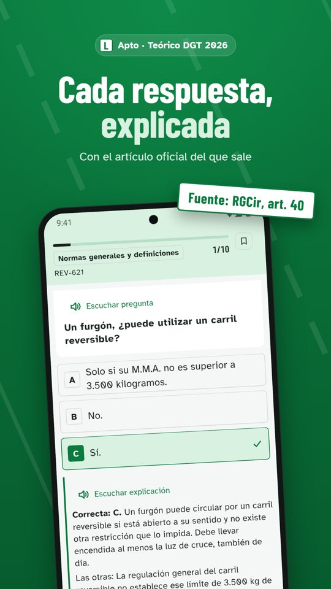
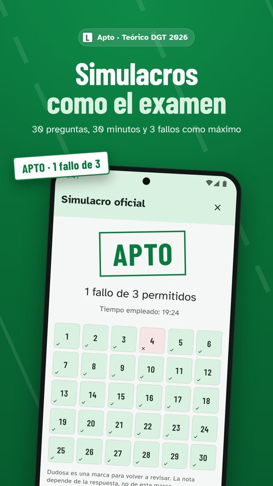
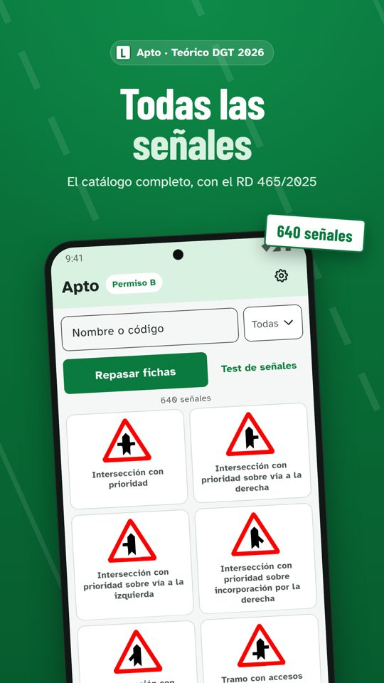

Permiso Coche B
Test del permiso B: el teórico de coche, pregunta a pregunta
Más de 1.500 preguntas del examen teórico del permiso B, cada una explicada con el artículo del Reglamento General de Circulación o de la Ley sobre Tráfico del que sale. Un simulacro oficial gratis cada día.
Descargar en el App StoreDescargar en Google Play
Cómo es el examen
| Preguntas | 30, de respuesta única |
|---|---|
| Tiempo | 30 minutos |
| Para aprobar | como máximo 3 fallos |
| Temario | 15 temas: normas, velocidad, adelantamientos, señales, documentación, seguridad, primeros auxilios… |



Gratis para siempre
- Temas 1 (Normas generales) y 3 (Velocidad) completos, con todas sus explicaciones
- Tres preguntas de muestra de cada uno de los demás temas
- Un simulacro oficial cada día, con la explicación de cada pregunta que falles
- Catálogo de 640 señales con su significado
Todo el permiso
Pase de 1 mes (7,99 €) o de 3 meses (12,99 €). Todos los temas con sus explicaciones, simulacros sin límite, test de fallos y un plan diario hasta tu fecha de examen. Los pases no se renuevan solos.
Descargar en el App StoreDescargar en Google Play
Preguntas frecuentes
¿Cuántas preguntas tiene el examen teórico del permiso B?
30 preguntas en 30 minutos. Se aprueba con 3 fallos como máximo. Apto hace los simulacros con ese mismo formato y con el reparto de temas del examen real.
¿Cuántas preguntas tiene Apto para el permiso B?
Más de 1.500, repartidas en los 15 temas del temario, y cada martes se publican correcciones y preguntas nuevas sin reinstalar la app.
¿Las preguntas están actualizadas a 2026?
Sí. Cada pregunta se redacta a partir del texto oficial publicado en el BOE y cita el artículo del que sale. El contenido está al día con la normativa vigente en octubre de 2026.
¿Apto es la app oficial de la DGT?
No. Apto es una aplicación independiente, sin relación con la Dirección General de Tráfico. Las preguntas se basan en la normativa oficial publicada en el BOE y cada una cita su fuente.
¿Los pases se renuevan solos?
No. Pagas una vez un pase de 1 o 3 meses y, cuando termina, sigues con lo gratuito y con todo tu progreso. No hay suscripción semanal ni cargos sorpresa.
¿Hace falta registrarse?
No. Apto no pide correo, teléfono ni DNI. Abres la app y empiezas.
Otros permisos: Moto A1/A2 · Ciclomotor AM